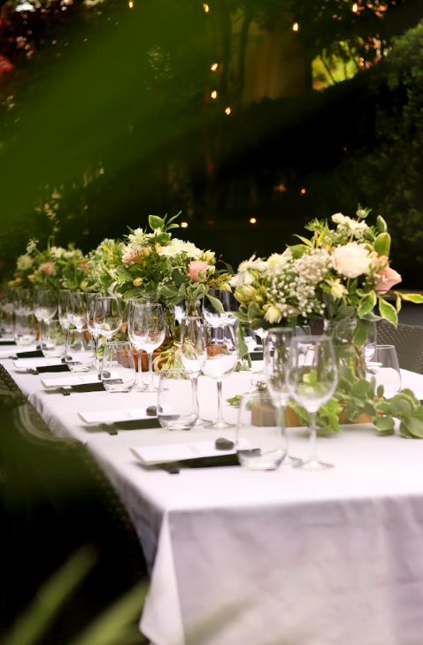
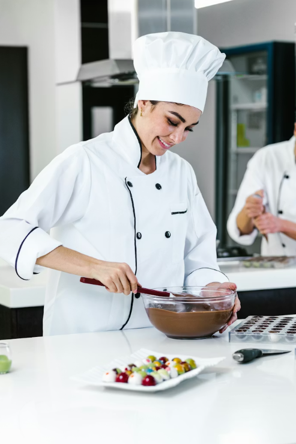
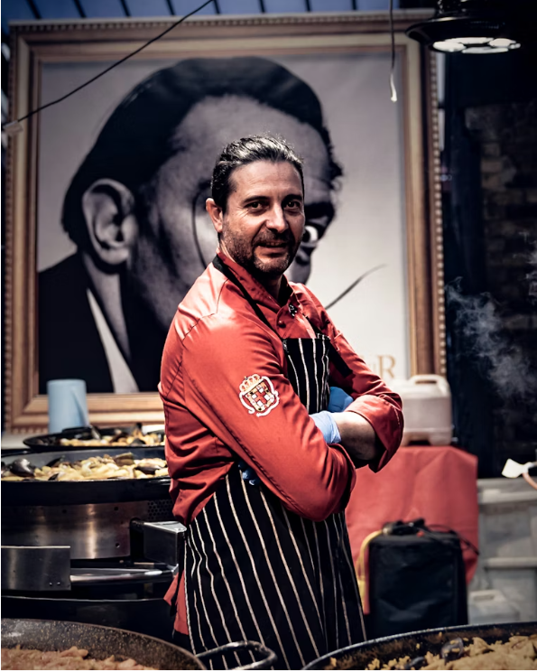
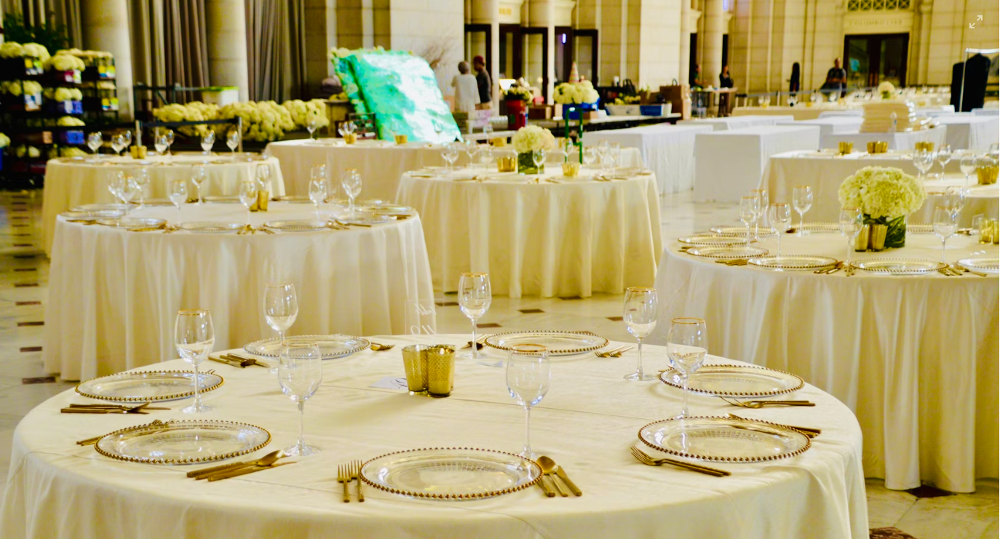

Notre histoire
Julie & José, aux fourneaux depuis 1995
Traiteurs passionnés au cœur de Bordeaux depuis plus de vingt-cinq ans.

Qui sommes-nous ?
Une passion née à Bordeaux
Tout a commencé en 1995, quand Julie et José — jeunes cuisiniers fraîchement diplômés — ont décidé de mettre leur passion commune au service de leur région. Partis d'un petit atelier bordelais, ils ont bâti Vite & Gourmand autour d'une conviction simple : une bonne cuisine, c'est avant tout de bons produits, bien choisis et bien traités.
Aujourd'hui, leur équipe intervient chaque semaine pour des centaines de convives — entreprises, collectivités, particuliers — avec la même exigence qu'au premier jour.

Julie
Cuisinière & Co-fondatrice
Formée à l'École Hôtelière de Bordeaux, Julie apporte sa créativité et sa sensibilité aux saveurs dans chaque prestation. C'est elle qui orchestre les menus et veille à l'harmonie des assiettes.

José
Cuisinier & Co-fondateur
Rigoureux et passionné, José gère la logistique et la coordination des équipes sur le terrain. Sa connaissance des producteurs locaux garantit la qualité des approvisionnements à chaque prestation.
Ce qui nous guide
Nos valeurs
Qualité & Fraîcheur
Nous travaillons exclusivement avec des producteurs locaux et des produits de saison. Chaque assiette reflète l'honnêteté de nos approvisionnements.
Ponctualité
Un événement ne s'improvise pas. Nous garantissons la livraison et la mise en place à l'heure convenue, partout en Gironde, sans exception.
Sur-mesure
Chaque prestation est conçue pour vous. Régimes alimentaires, thèmes culinaires, ambiances souhaitées — nous adaptons tout à vos besoins.
Excellence
Certifiés HACCP, nous appliquons les plus hauts standards d'hygiène et de sécurité alimentaire. Votre confiance est notre priorité absolue.
Notre engagement
Des engagements concrets, chaque jour
Derrière chaque plateau, chaque buffet, chaque réception, il y a une démarche rigoureuse que nous assumons pleinement. Nous ne faisons pas de compromis sur ce qui compte.
- Approvisionnement auprès de producteurs girondins et locaux
- Cuisines certifiées HACCP et audits d'hygiène réguliers
- Livraison ponctuelle garantie partout en Gironde
- Emballages éco-responsables et réduction des déchets
- Adaptation aux régimes alimentaires et allergies

Prêt à commander ?
Obtenez votre devis personnalisé en moins de 24 heures.